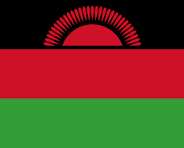

My name is Yassin Nedie, from Lilongwe, Malawi. I am currently working as a software developer for a startup in Lilongwe. I have a son, Aayan and i love spending time with him.

Malawi, a landlocked country in southeastern Africa, is defined by its topography of highlands split by the Great Rift Valley and enormous Lake Malawi. The lake’s southern end falls within Lake Malawi National Park - sheltering diverse wildlife from colorful fish to baboons - and its clear waters are popular for diving and boating. Peninsular Cape Maclear is known for its beach resorts.